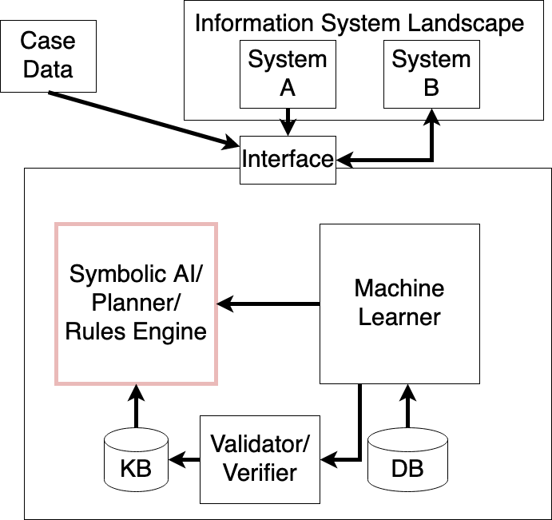

### About Me
* 4th year PhD Student
* Research interests:
* Automated reasoning
* Engineering intelligent systems
* Also *Scientist in Residence, Product*, Signavio / SAP BPI
#### Outline
* In many real-world application scenarios we need machines that
**learn** and **reason**
* *Human* reasoning has been studied from descriptive and prescriptive perspectives since (at least) centuries
* Can the principles according to which humans (should) reason inform the way machines reason?
What is (Artificial) Intelligence?
Moving target that captures the public imagination
What is (Artificial) Intelligence?
Principle-based reasoning and principle-based belief revision
What is AI in the real world?

Lindgren *et al*. *Argumentation-based Health Information Systems: A Design Methodology.* 2021.
By now, we know that economic rationality is not a good model of human (intelligent) decision-making.
Economists try to adjusts their models accordingly.
Key improvement: modeling knowledge in decision scenarios.
Kahneman, Daniel. *Maps of bounded rationality.*
Rubinstein, Ariel. *Modeling bounded rationality.*
#### Consistent Preferences in Knowledge-based Systems
* We want to determine the relevant citizenship (passports) of a client
* Example: case handling of immigration or tax administration
* We use decision management software (a real-world system)
* The decision models can be deployed to high-scalability engines such as [jDMN](https://goldmansachs.github.io/jdmn/)
TK. Nieves, Juan Carlos. *Abstract Argumentation and the Rational Man*.
#### Consistent Preferences in Knowledge-based Systems
* First, insert ``NO`` (Norwegian citizenship)
→ ``NO`` considered relevant
* Then, insert ``UK`` (UK citizenship) as additional option
→ neither ``NO`` nor ``UK`` relevant: not rational!
* Automated checks of decision management software don't detect this problem
#### There are more principles
* Example: legal reasoning, *burden of persuasion*
* If several conclusions/decisions are possible
* If in doubt, remain consistent with previous decision
"Reasoning Backwards"
We also know that humans "reason backwards".
We commit to a decision intuitively.
We make up a line of reasoning if necessary.
Haidt, Jonathan. *The emotional dog and its rational tail: a social intuitionist approach to moral judgment.*
#### "Reasoning backwards"
* Find an explanation that happens to be satisfied
* Explanation generation as most substantial part of the reasoning process
* In a knowledge-based system, we get a trace of the proof
* What do we get in an ML-based system?
Post-Hoc Explainability Methods are "Correlating Backwards"!
Ribeiro *et al*. *'Why should i trust you?' Explaining the predictions of any classifier.*
#### Alternative to Reasoning Backwards
* Principle-based and evidence-based reasoning
* Explaining change
Example Decision Model
#### Example II
* Change: new passport reported: ``UK``
* Principle violated: *reference independence*
* Explanation, "new" rules that fire
* If any passport is EU passport, remove non-EU passports
* If ``r1`` then ``r2``
* ``UK`` is ``EU`` in r1 but is not ``EU`` in ``r2``
#### Learning Principles
#### Learning Principles
* We know that we can mine knowledge and reason about it
* Principles are not generally applicable (at least most principles)
* Can we learn which principles should be satisfied?
* How can we learn (and reason about) new principles?
Learning Knowledge and Reasoning About It I
Example: process mining
Mine Petri Nets from event log data
Formally analyze properties like liveness, deadlock-freeness.
Van der Aalst, Wil. *Process mining.*
Learning Knowledge and Reasoning About It II
Example: explainable recommender systems
Mine argumentation graphs from (movie) review data
Enforce relaxed monotony principles and facilitate explainability.
Rago *et al.* *Argumentation as a Framework for Interactive Explanations for Recommendations*
Learning Knowledge and Reasoning About It III
Gap between technology ecosystems
#### Learning to Select Principles
* Connect historic data to KPIs
* Enforce different principles and select a set of non-mutually exclusive principles that maximizes KPI achievement
#### Learning New/Refined Principles
* Humans do this (legal system of any advanced society)
* Requires automated reasoning about reasoning
* Is in its infancy but a hot topic
[Popular science overview of SOTA](https://www.quantamagazine.org/building-the-mathematical-library-of-the-future-20201001/)
Questions?
*Next week:
Explainable AI Workshop with Logic and Argumentation Session*
[https://extraamas.ehealth.hevs.ch/](https://extraamas.ehealth.hevs.ch/)